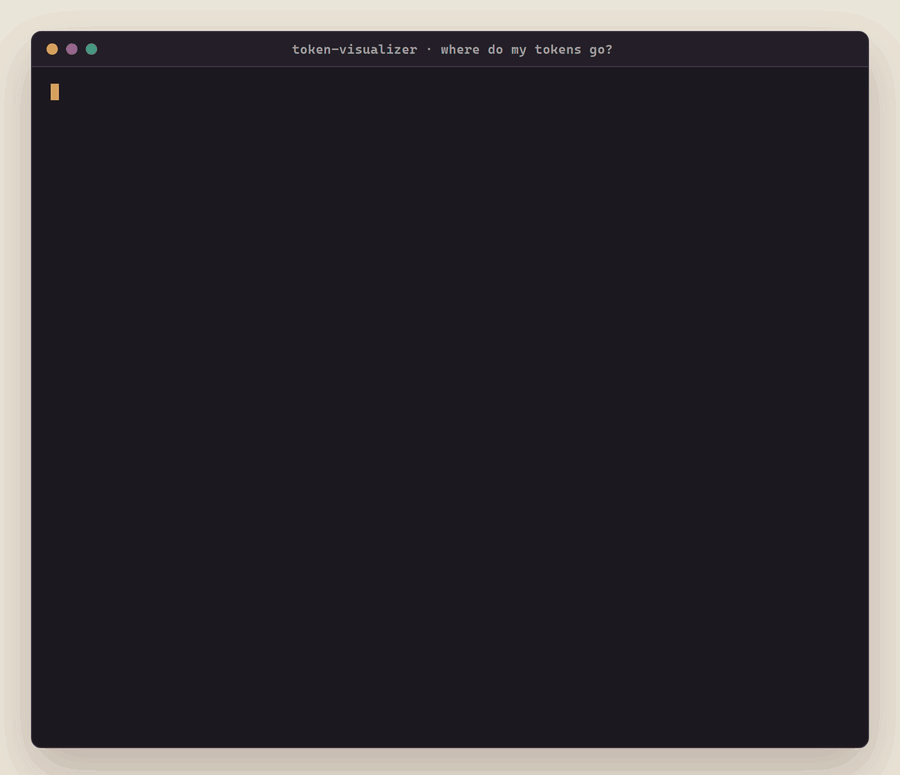

Token Visualizer
A free LLM token counter. See how GPT-4 or GPT-4o chops your prompt into tokens, which lines cost the most, and which wordy phrases to cut. The savings are measured by running the shorter text through the same tokenizer, not guessed.
Free, MIT licensed, works offline. Unsigned: if Windows SmartScreen asks, click More info, then Run anyway.

How it works

1. Cut
The model's own tokenizer (tiktoken) splits each line into tokens, the numbered pieces a model reads and bills for.
2. Count
Every line gets a token count, green under 25, yellow 25 to 50, red over 50, and the prompt gets a total and a rough cost.
3. Measure
It swaps wordy phrases for short ones, squeezes extra whitespace, tokenizes the new text again and reports the real difference.
Examples
Real output from version 0.3.1.
One wordy sentence
$ echo "In order to help you, due to the fact that you asked." | token-visualizer
Total tokens: 14
...
Applying the phrase and whitespace fixes: 14 → 8 tokens (-6, 43%)Exact token boundaries
TOKEN BREAKDOWN:
[0:In] [1: order] [2: to] [3: help] [4: you] [5:,] [6: due] [7: to] [8: the]
[9: fact] [10: that] [11: you] [12: asked] [13:.\n]Most tokens carry the space in front of the word, so order and order are different tokens.
A 5-line support prompt
$ token-visualizer examples/support-prompt.txt -m gpt-4o
Verbose phrases found:
'in order to' → 'to'
'due to the fact that' → 'because'
'in the event that' → 'if'
MEASURED SAVINGS
Applying the phrase and whitespace fixes: 70 → 61 tokens (-9, 13%)Install
| Platform | How |
|---|---|
| Windows | Download the .exe, double-click it, paste your prompt |
| Windows (Scoop) | scoop bucket add mattbusel https://github.com/Mattbusel/scoop-bucket; scoop install mattbusel/token-visualizer |
| macOS, Linux (Homebrew) | brew install mattbusel/tap/token-visualizer |
| macOS, Linux (script) | curl -fsSL https://raw.githubusercontent.com/Mattbusel/Token-Visualizer/main/install.sh | sh |
| Any OS with Python 3.8+ | pipx install git+https://github.com/Mattbusel/Token-Visualizer |
Use it in 3 steps
- Get it with any line above.
- Run it on your prompt:
token-visualizer prompt.txt -m gpt-4o, or double-click the .exe and paste (end with Ctrl+Z, then Enter). - Cut what it flags and run it again to see the new count.
Claude has no public tokenizer, so claude-3-sonnet falls back to whitespace splitting and says so. For Llama and other open models, pass a Hugging Face model ID (from source, with transformers). Full options: reference.